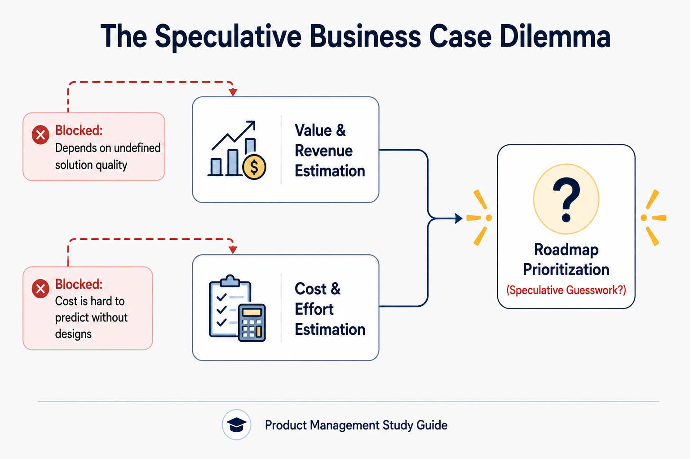
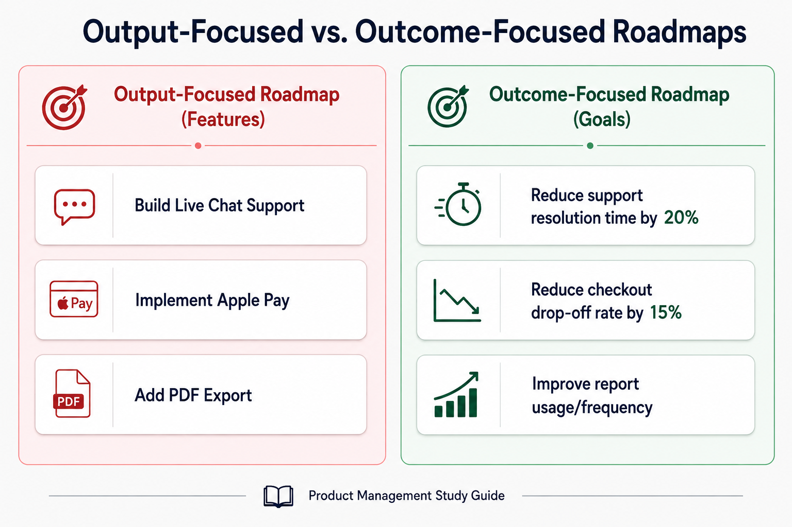
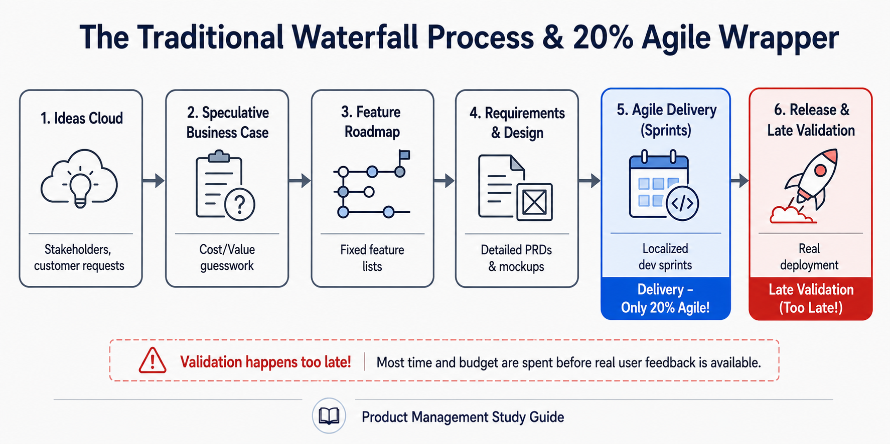

Your goal
Explain why the traditional product process fails, distinguish between output-focused and outcome-focused roadmaps, and analyze the limitations of early-stage business cases.
Lecture overview
This lecture exposes the systemic flaws in the traditional product development process used by the vast majority of tech companies. By the end, you should be able to: Outline the traditional sequential product development flow (waterfall); Explain the four primary failure points of this traditional approach; Distinguish between output-focused (feature-based) roadmaps and outcome-focused (goal-oriented) roadmaps; and Explain the concept of "20% Agile" and why localized agility in delivery does not prevent product failure.
Central argument
Agile delivery (sprints, scrum) is meaningless if it resides at the tail end of a rigid, sequential waterfall planning process. Real agility requires moving validation to the front of the product lifecycle—prioritizing outcomes over feature outputs, leveraging developers for solution ideation, and avoiding speculative, ungrounded business cases.
1. The Traditional Product Development Flow
Most tech companies, regardless of size, build products using the same basic sequential flow:
Ideas ➔ Planning & Business Cases ➔ Feature Roadmap ➔ Requirements ➔ Design ➔ Development (Sprints) ➔ Release & Track
- Ideas Cloud: Ideas are gathered from internal stakeholders (product vision) and external stakeholders (customers, partners).
- Planning & Business Cases: Quarterly or annual planning sessions evaluate ideas using business cases to forecast value and costs.
- Feature Roadmap: The approved ideas form a prioritized list of features to build over the next quarter or year.
- Requirements & Design: The Product Manager/Owner writes detailed requirements, and designers create visual mockups.
- Development (Agile Sprints): Engineers break down requirements into sprint iterations to build and test code.
- Release & Tracking: The completed feature is deployed, and usage is tracked.
Although companies refer to this process as "Agile" because of sprint iterations, the overall sequence remains fundamentally Waterfall.
2. The Four Primary Failure Points of the Waterfall Process
This sequential planning model introduces four systemic failure points that lead to wasted capital and failed initiatives:

11-speculative-business-case.png
Illustrates the speculative cost and value guesswork loop before solution definition.
- Late Validation: Customer validation happens only after the product is released. By the time real user behavior is observed, the company has already spent significant time and money building the solution. If the idea was flawed, it is too late to recoup the investment.
- Speculative Business Cases: Business cases require early-stage estimates of forecasted revenue/value and development cost. At this stage, these inputs are unknowable. Cost depends on the solution design (not yet defined), and revenue depends on solution efficacy. As a result, roadmaps are prioritized based on ungrounded, wild guesses.
- Output-Focused Roadmaps: Traditional roadmaps are prioritized lists of features and projects (e.g., "Add Apple Pay," "Redesign Sidebar"). Teams focus on shipping outputs (delivering the feature on time) rather than driving outcomes (solving the underlying user or business problem).
- Delayed Collaboration: Designers and developers are brought in only at the end of the planning cycle to execute pre-defined requirements. Developers, who understand technical constraints and possibilities best, are excluded from defining the solution space. Designers are unable to run early usability validation.
3. Output vs. Outcome Roadmaps
The core issue with traditional roadmaps is that they treat features as the final goal rather than a means to an end.

11-output-vs-outcome-roadmaps.png
Contrasts a feature-based output roadmap with a goal-oriented outcome roadmap.
| Dimension | Output-Focused (Traditional) | Outcome-Focused (Modern) |
|---|---|---|
| Core Metric | Shipping the feature on time and within budget. | Solving a user problem or moving a business metric. |
| Roadmap Content | A prioritized list of specific features/projects. | A list of goals, user problems, and business outcomes. |
| Team Focus | "What are we building?" (Outputs). | "Why are we building this, and what does success look like?" (Outcomes). |
| Example Item | "Build a new Live Chat support tool." | "Reduce average customer support ticket resolution time by 20%." |
Practical Product Management example
Situation
A health-tech startup has an output-focused roadmap item: "Build an AI-powered calorie tracking scanner" to improve user engagement. The engineering team estimates it will take 4 months to train the vision model and develop the UI.
Decision
The PM decides to reframe this output item to an outcome-oriented goal: "Increase weekly food logging frequency by 30%."
Reasoning
By focusing on the outcome (logging frequency) rather than the output (AI scanner), the team realizes they don't need to build a complex AI model immediately. They can test simpler hypotheses first, such as adding a "frequently logged foods" quick-tap list or barcode scanner.
Consequence
The team implements the "frequently logged foods" feature in 2 weeks. Weekly logging frequency increases by 35% among early adopters. The startup saves 3.5 months of engineering time and avoids the complex AI model entirely.
Transferable lesson
Outcome-based planning frees the product team to find the simplest, lowest-cost solution to a problem instead of locking them into building complex, unvalidated features.
Common misunderstandings
"Since our engineering team uses 2-week sprints and Scrum, we are an Agile company."
Sprints are only a delivery tool. If the features in those sprints were locked into a roadmap months ago using speculative business cases, the organization is running a Waterfall process with a "20% Agile" wrapper. True agility requires agile product discovery and early validation.
Decision consequence: Prevents false confidence in organization-wide agility; focuses the PM's effort on setting up discovery validation loops.
"Developers should only focus on writing code, not brainstorming product features."
Developers are often the best source of innovation because they understand what is technologically possible. When kept in a silo, they can only build what is requested, missing opportunities for technically elegant, low-cost solutions.
Decision consequence: Harnesses developer expertise upfront, preventing later execution feasibility roadblocks.
Key concepts and definitions
- Waterfall
- A sequential product development process where each phase (planning, design, development, testing) must be completed before the next begins.
- Output
- The tangible assets or features that a team builds and ships (e.g., code, mockups, button designs).
- Outcome
- The measurable change in user behavior or business metrics resulting from shipped features (e.g., increased conversion, higher retention).
Key takeaways
- Validation Must Happen Early: Do not wait for a full release to test your hypotheses; validate customer interest and usability upfront.
- Business Cases are Often Speculative: Acknowledge that revenue and cost estimates are highly inaccurate before the solution is defined.
- Move from Outputs to Outcomes: Measure team success by business goals achieved rather than features shipped.
- Bring Developers in Early: Involve engineering in product discovery to leverage their technical insights for solution design.
- Agile Delivery is Not Enough: A "20% Agile" process (agile for code construction only) does not prevent shipping the wrong product.
Visual summary

11-visual-summary.png
Illustrates the full sequential waterfall process highlighting agile sprints at the end.
The visual summary shows how traditional product planning remains sequential (Waterfall). Ideas feed into unvalidated business case estimates, which are then locked into output-based feature roadmaps. Designers and developers simply execute requirements, and agile sprints exist only at the tail end as delivery mechanisms. Real validation occurs only at release, making it too late to verify critical hypotheses.
One-minute review
Traditional product development is fundamentally a Waterfall process—even when wrapped in 2-week agile sprints. It fails because it lacks early validation, relies on speculative business case guesses, locks teams into output-focused feature roadmaps, and delays developer collaboration. To build successful tech products, teams must shift from shipping outputs (features) to driving outcomes (validated user/business solutions) and collaborate cross-functionally from day one.
Interactive practice
Classify Output vs. Outcome Roadmap Items
Evaluate the roadmap items below and classify them as **Output (Feature-Focused)** vs. **Outcome (Goal-Oriented)**.
Scenario 1: "Add Apple Pay payment option to the checkout screen to reduce transaction friction."
Scenario 2: "Reduce payment transaction abandonment rate by 15% during the checkout funnel."
Explore Core Failure Points
Explore the four critical structural issues that cause traditional product initiatives to fail: